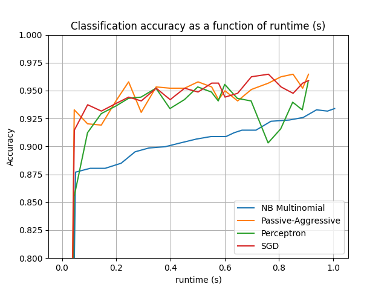

Note
Go to the end to download the full example code or to run this example in your browser via Binder
Out-of-core classification of text documents¶
This is an example showing how scikit-learn can be used for classification using an out-of-core approach: learning from data that doesn’t fit into main memory. We make use of an online classifier, i.e., one that supports the partial_fit method, that will be fed with batches of examples. To guarantee that the features space remains the same over time we leverage a HashingVectorizer that will project each example into the same feature space. This is especially useful in the case of text classification where new features (words) may appear in each batch.
# Authors: Eustache Diemert <eustache@diemert.fr>
# @FedericoV <https://github.com/FedericoV/>
# License: BSD 3 clause
import itertools
import re
import sys
import tarfile
import time
from hashlib import sha256
from html.parser import HTMLParser
from pathlib import Path
from urllib.request import urlretrieve
import matplotlib.pyplot as plt
import numpy as np
from matplotlib import rcParams
from sklearn.datasets import get_data_home
from sklearn.feature_extraction.text import HashingVectorizer
from sklearn.linear_model import PassiveAggressiveClassifier, Perceptron, SGDClassifier
from sklearn.naive_bayes import MultinomialNB
def _not_in_sphinx():
# Hack to detect whether we are running by the sphinx builder
return "__file__" in globals()
Main¶
Create the vectorizer and limit the number of features to a reasonable maximum
vectorizer = HashingVectorizer(
decode_error="ignore", n_features=2**18, alternate_sign=False
)
# Iterator over parsed Reuters SGML files.
data_stream = stream_reuters_documents()
# We learn a binary classification between the "acq" class and all the others.
# "acq" was chosen as it is more or less evenly distributed in the Reuters
# files. For other datasets, one should take care of creating a test set with
# a realistic portion of positive instances.
all_classes = np.array([0, 1])
positive_class = "acq"
# Here are some classifiers that support the `partial_fit` method
partial_fit_classifiers = {
"SGD": SGDClassifier(max_iter=5),
"Perceptron": Perceptron(),
"NB Multinomial": MultinomialNB(alpha=0.01),
"Passive-Aggressive": PassiveAggressiveClassifier(),
}
def get_minibatch(doc_iter, size, pos_class=positive_class):
"""Extract a minibatch of examples, return a tuple X_text, y.
Note: size is before excluding invalid docs with no topics assigned.
"""
data = [
("{title}\n\n{body}".format(**doc), pos_class in doc["topics"])
for doc in itertools.islice(doc_iter, size)
if doc["topics"]
]
if not len(data):
return np.asarray([], dtype=int), np.asarray([], dtype=int)
X_text, y = zip(*data)
return X_text, np.asarray(y, dtype=int)
def iter_minibatches(doc_iter, minibatch_size):
"""Generator of minibatches."""
X_text, y = get_minibatch(doc_iter, minibatch_size)
while len(X_text):
yield X_text, y
X_text, y = get_minibatch(doc_iter, minibatch_size)
# test data statistics
test_stats = {"n_test": 0, "n_test_pos": 0}
# First we hold out a number of examples to estimate accuracy
n_test_documents = 1000
tick = time.time()
X_test_text, y_test = get_minibatch(data_stream, 1000)
parsing_time = time.time() - tick
tick = time.time()
X_test = vectorizer.transform(X_test_text)
vectorizing_time = time.time() - tick
test_stats["n_test"] += len(y_test)
test_stats["n_test_pos"] += sum(y_test)
print("Test set is %d documents (%d positive)" % (len(y_test), sum(y_test)))
def progress(cls_name, stats):
"""Report progress information, return a string."""
duration = time.time() - stats["t0"]
s = "%20s classifier : \t" % cls_name
s += "%(n_train)6d train docs (%(n_train_pos)6d positive) " % stats
s += "%(n_test)6d test docs (%(n_test_pos)6d positive) " % test_stats
s += "accuracy: %(accuracy).3f " % stats
s += "in %.2fs (%5d docs/s)" % (duration, stats["n_train"] / duration)
return s
cls_stats = {}
for cls_name in partial_fit_classifiers:
stats = {
"n_train": 0,
"n_train_pos": 0,
"accuracy": 0.0,
"accuracy_history": [(0, 0)],
"t0": time.time(),
"runtime_history": [(0, 0)],
"total_fit_time": 0.0,
}
cls_stats[cls_name] = stats
get_minibatch(data_stream, n_test_documents)
# Discard test set
# We will feed the classifier with mini-batches of 1000 documents; this means
# we have at most 1000 docs in memory at any time. The smaller the document
# batch, the bigger the relative overhead of the partial fit methods.
minibatch_size = 1000
# Create the data_stream that parses Reuters SGML files and iterates on
# documents as a stream.
minibatch_iterators = iter_minibatches(data_stream, minibatch_size)
total_vect_time = 0.0
# Main loop : iterate on mini-batches of examples
for i, (X_train_text, y_train) in enumerate(minibatch_iterators):
tick = time.time()
X_train = vectorizer.transform(X_train_text)
total_vect_time += time.time() - tick
for cls_name, cls in partial_fit_classifiers.items():
tick = time.time()
# update estimator with examples in the current mini-batch
cls.partial_fit(X_train, y_train, classes=all_classes)
# accumulate test accuracy stats
cls_stats[cls_name]["total_fit_time"] += time.time() - tick
cls_stats[cls_name]["n_train"] += X_train.shape[0]
cls_stats[cls_name]["n_train_pos"] += sum(y_train)
tick = time.time()
cls_stats[cls_name]["accuracy"] = cls.score(X_test, y_test)
cls_stats[cls_name]["prediction_time"] = time.time() - tick
acc_history = (cls_stats[cls_name]["accuracy"], cls_stats[cls_name]["n_train"])
cls_stats[cls_name]["accuracy_history"].append(acc_history)
run_history = (
cls_stats[cls_name]["accuracy"],
total_vect_time + cls_stats[cls_name]["total_fit_time"],
)
cls_stats[cls_name]["runtime_history"].append(run_history)
if i % 3 == 0:
print(progress(cls_name, cls_stats[cls_name]))
if i % 3 == 0:
print("\n")
downloading dataset (once and for all) into /root/scikit_learn_data/reuters
untarring Reuters dataset...
done.
Test set is 878 documents (108 positive)
SGD classifier : 962 train docs ( 132 positive) 878 test docs ( 108 positive) accuracy: 0.915 in 0.43s ( 2262 docs/s)
Perceptron classifier : 962 train docs ( 132 positive) 878 test docs ( 108 positive) accuracy: 0.855 in 0.43s ( 2252 docs/s)
NB Multinomial classifier : 962 train docs ( 132 positive) 878 test docs ( 108 positive) accuracy: 0.877 in 0.44s ( 2204 docs/s)
Passive-Aggressive classifier : 962 train docs ( 132 positive) 878 test docs ( 108 positive) accuracy: 0.933 in 0.44s ( 2193 docs/s)
SGD classifier : 3911 train docs ( 517 positive) 878 test docs ( 108 positive) accuracy: 0.938 in 1.27s ( 3083 docs/s)
Perceptron classifier : 3911 train docs ( 517 positive) 878 test docs ( 108 positive) accuracy: 0.936 in 1.27s ( 3079 docs/s)
NB Multinomial classifier : 3911 train docs ( 517 positive) 878 test docs ( 108 positive) accuracy: 0.885 in 1.28s ( 3057 docs/s)
Passive-Aggressive classifier : 3911 train docs ( 517 positive) 878 test docs ( 108 positive) accuracy: 0.941 in 1.28s ( 3053 docs/s)
SGD classifier : 6821 train docs ( 891 positive) 878 test docs ( 108 positive) accuracy: 0.952 in 2.10s ( 3248 docs/s)
Perceptron classifier : 6821 train docs ( 891 positive) 878 test docs ( 108 positive) accuracy: 0.952 in 2.10s ( 3246 docs/s)
NB Multinomial classifier : 6821 train docs ( 891 positive) 878 test docs ( 108 positive) accuracy: 0.900 in 2.11s ( 3232 docs/s)
Passive-Aggressive classifier : 6821 train docs ( 891 positive) 878 test docs ( 108 positive) accuracy: 0.953 in 2.11s ( 3229 docs/s)
SGD classifier : 9759 train docs ( 1276 positive) 878 test docs ( 108 positive) accuracy: 0.949 in 2.95s ( 3312 docs/s)
Perceptron classifier : 9759 train docs ( 1276 positive) 878 test docs ( 108 positive) accuracy: 0.953 in 2.95s ( 3310 docs/s)
NB Multinomial classifier : 9759 train docs ( 1276 positive) 878 test docs ( 108 positive) accuracy: 0.909 in 2.96s ( 3300 docs/s)
Passive-Aggressive classifier : 9759 train docs ( 1276 positive) 878 test docs ( 108 positive) accuracy: 0.958 in 2.96s ( 3298 docs/s)
SGD classifier : 11680 train docs ( 1499 positive) 878 test docs ( 108 positive) accuracy: 0.944 in 3.68s ( 3171 docs/s)
Perceptron classifier : 11680 train docs ( 1499 positive) 878 test docs ( 108 positive) accuracy: 0.956 in 3.68s ( 3170 docs/s)
NB Multinomial classifier : 11680 train docs ( 1499 positive) 878 test docs ( 108 positive) accuracy: 0.915 in 3.69s ( 3162 docs/s)
Passive-Aggressive classifier : 11680 train docs ( 1499 positive) 878 test docs ( 108 positive) accuracy: 0.950 in 3.69s ( 3161 docs/s)
SGD classifier : 14625 train docs ( 1865 positive) 878 test docs ( 108 positive) accuracy: 0.965 in 4.55s ( 3217 docs/s)
Perceptron classifier : 14625 train docs ( 1865 positive) 878 test docs ( 108 positive) accuracy: 0.903 in 4.55s ( 3215 docs/s)
NB Multinomial classifier : 14625 train docs ( 1865 positive) 878 test docs ( 108 positive) accuracy: 0.924 in 4.56s ( 3209 docs/s)
Passive-Aggressive classifier : 14625 train docs ( 1865 positive) 878 test docs ( 108 positive) accuracy: 0.957 in 4.56s ( 3208 docs/s)
SGD classifier : 17360 train docs ( 2179 positive) 878 test docs ( 108 positive) accuracy: 0.957 in 5.33s ( 3257 docs/s)
Perceptron classifier : 17360 train docs ( 2179 positive) 878 test docs ( 108 positive) accuracy: 0.933 in 5.33s ( 3256 docs/s)
NB Multinomial classifier : 17360 train docs ( 2179 positive) 878 test docs ( 108 positive) accuracy: 0.932 in 5.34s ( 3251 docs/s)
Passive-Aggressive classifier : 17360 train docs ( 2179 positive) 878 test docs ( 108 positive) accuracy: 0.952 in 5.34s ( 3250 docs/s)
Plot results¶
The plot represents the learning curve of the classifier: the evolution of classification accuracy over the course of the mini-batches. Accuracy is measured on the first 1000 samples, held out as a validation set.
To limit the memory consumption, we queue examples up to a fixed amount before feeding them to the learner.
def plot_accuracy(x, y, x_legend):
"""Plot accuracy as a function of x."""
x = np.array(x)
y = np.array(y)
plt.title("Classification accuracy as a function of %s" % x_legend)
plt.xlabel("%s" % x_legend)
plt.ylabel("Accuracy")
plt.grid(True)
plt.plot(x, y)
rcParams["legend.fontsize"] = 10
cls_names = list(sorted(cls_stats.keys()))
# Plot accuracy evolution
plt.figure()
for _, stats in sorted(cls_stats.items()):
# Plot accuracy evolution with #examples
accuracy, n_examples = zip(*stats["accuracy_history"])
plot_accuracy(n_examples, accuracy, "training examples (#)")
ax = plt.gca()
ax.set_ylim((0.8, 1))
plt.legend(cls_names, loc="best")
plt.figure()
for _, stats in sorted(cls_stats.items()):
# Plot accuracy evolution with runtime
accuracy, runtime = zip(*stats["runtime_history"])
plot_accuracy(runtime, accuracy, "runtime (s)")
ax = plt.gca()
ax.set_ylim((0.8, 1))
plt.legend(cls_names, loc="best")
# Plot fitting times
plt.figure()
fig = plt.gcf()
cls_runtime = [stats["total_fit_time"] for cls_name, stats in sorted(cls_stats.items())]
cls_runtime.append(total_vect_time)
cls_names.append("Vectorization")
bar_colors = ["b", "g", "r", "c", "m", "y"]
ax = plt.subplot(111)
rectangles = plt.bar(range(len(cls_names)), cls_runtime, width=0.5, color=bar_colors)
ax.set_xticks(np.linspace(0, len(cls_names) - 1, len(cls_names)))
ax.set_xticklabels(cls_names, fontsize=10)
ymax = max(cls_runtime) * 1.2
ax.set_ylim((0, ymax))
ax.set_ylabel("runtime (s)")
ax.set_title("Training Times")
def autolabel(rectangles):
"""attach some text vi autolabel on rectangles."""
for rect in rectangles:
height = rect.get_height()
ax.text(
rect.get_x() + rect.get_width() / 2.0,
1.05 * height,
"%.4f" % height,
ha="center",
va="bottom",
)
plt.setp(plt.xticks()[1], rotation=30)
autolabel(rectangles)
plt.tight_layout()
plt.show()
# Plot prediction times
plt.figure()
cls_runtime = []
cls_names = list(sorted(cls_stats.keys()))
for cls_name, stats in sorted(cls_stats.items()):
cls_runtime.append(stats["prediction_time"])
cls_runtime.append(parsing_time)
cls_names.append("Read/Parse\n+Feat.Extr.")
cls_runtime.append(vectorizing_time)
cls_names.append("Hashing\n+Vect.")
ax = plt.subplot(111)
rectangles = plt.bar(range(len(cls_names)), cls_runtime, width=0.5, color=bar_colors)
ax.set_xticks(np.linspace(0, len(cls_names) - 1, len(cls_names)))
ax.set_xticklabels(cls_names, fontsize=8)
plt.setp(plt.xticks()[1], rotation=30)
ymax = max(cls_runtime) * 1.2
ax.set_ylim((0, ymax))
ax.set_ylabel("runtime (s)")
ax.set_title("Prediction Times (%d instances)" % n_test_documents)
autolabel(rectangles)
plt.tight_layout()
plt.show()
- 


Total running time of the script: (0 minutes 22.559 seconds)